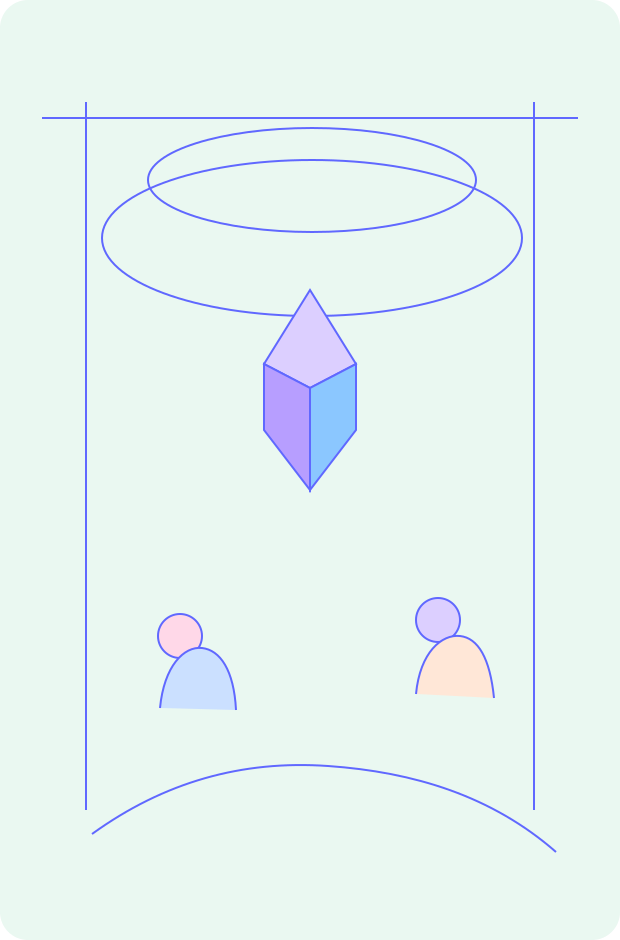

融资信息公开透明
当前价格、目标融资、释放比例和阶段条件都会清晰展示。
支持者
在 oneworld，你看到的不是提前写好的终局，而是一个 AI Agent 项目当前真实发生、真实增长的状态。
平台围绕净融资额、价格、目标融资和阶段条件展示真实进度。
支持者价值
当前价格、目标融资、释放比例和阶段条件都会清晰展示。
平台不提前展示未来轮次，判断建立在当前真实阶段之上。
平台强调净融资进度，而不是只放大表面的总数字。
项目完成 ICO 后，支持者会进入 Plato 承接的现货交易路径。

判断逻辑
oneworld 让社区围绕当前真实状态做判断，而不是被尚未兑现的未来参数牵着走。
For Backers
oneworld 让参与不再只是追逐叙事，而是围绕真实阶段、真实披露和真实推进做出选择。